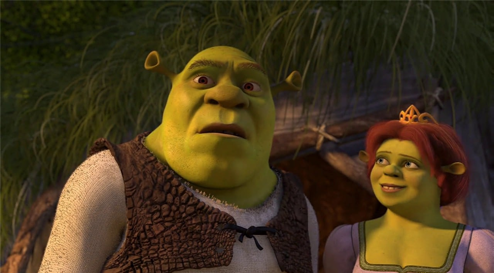
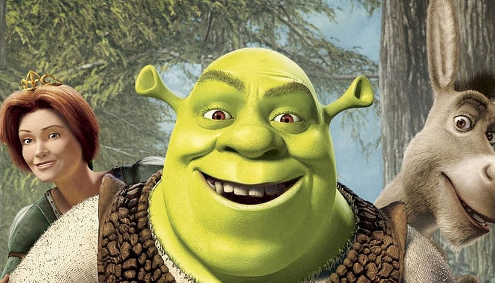
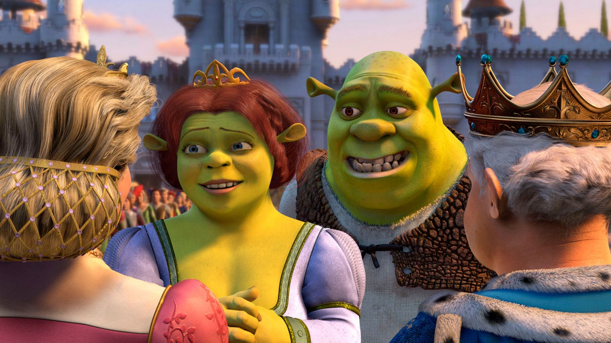
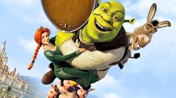

FilmTEB

| Role w filmie |
- Shrek
- Mike Myers
- Princess Fiona
- Cameron Diaz
- Donkey
- Eddie Murphy
- Puss in Boots
- Antonio Banderas
- Prince Charming
- Rupert Everett
- King
- John Cleese
- Queen
- Julie Andrews
|
| Zdjęcia filmu Shrek 2 |
 |
 |
 |
Opis filmu
Po powrocie z miesiąca miodowego Shrek i Fiona postanawiają odwiedzić rodziców księżniczki, do których dotarła jedynie wiadomość o ślubie
ich córki z prawdziwą miłością jej życia. Młoda para rusza więc do królestwa Zasiedmiogórogrodu. Problem jednak w tym, że rodzice Fiony
w ogóle nie zdają sobie sprawy z ciążącej na niej klątwy. W związku z tym są pewni, iż poślubiła ona kogoś z wyższych sfer, kawalera pokroju
Lorda Farquaada - władcy rządzącego zasobnym państwem. Jakież więc jest zdziwienie, kiedy ich zięć okazuje się ważącym ponad 300 kilogramów
zielonym ogrem nie przywiązującym wagi do higieny, któremu w dodatku towarzyszy gadający osioł.
Obsada filmu Shrek